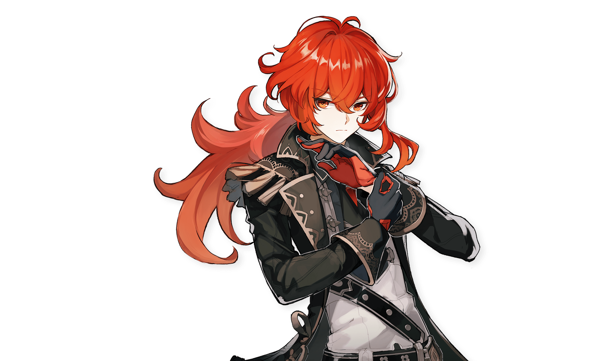
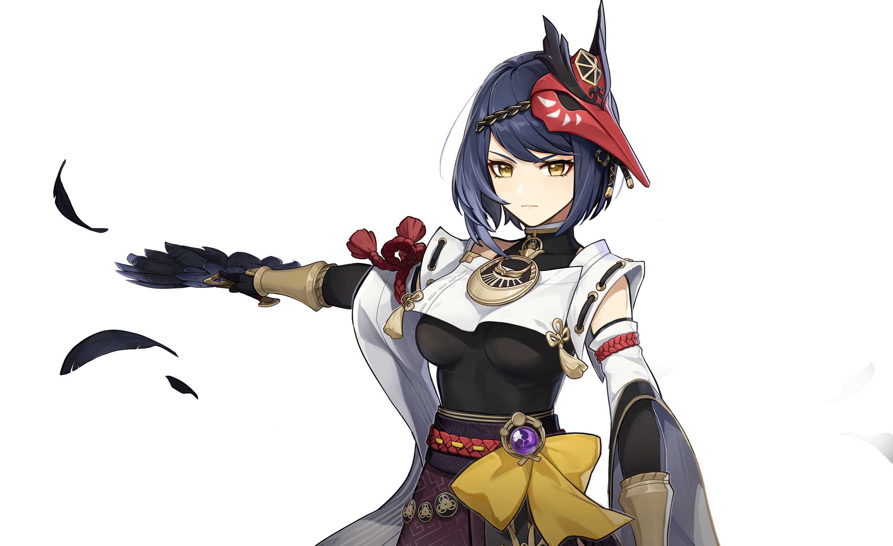
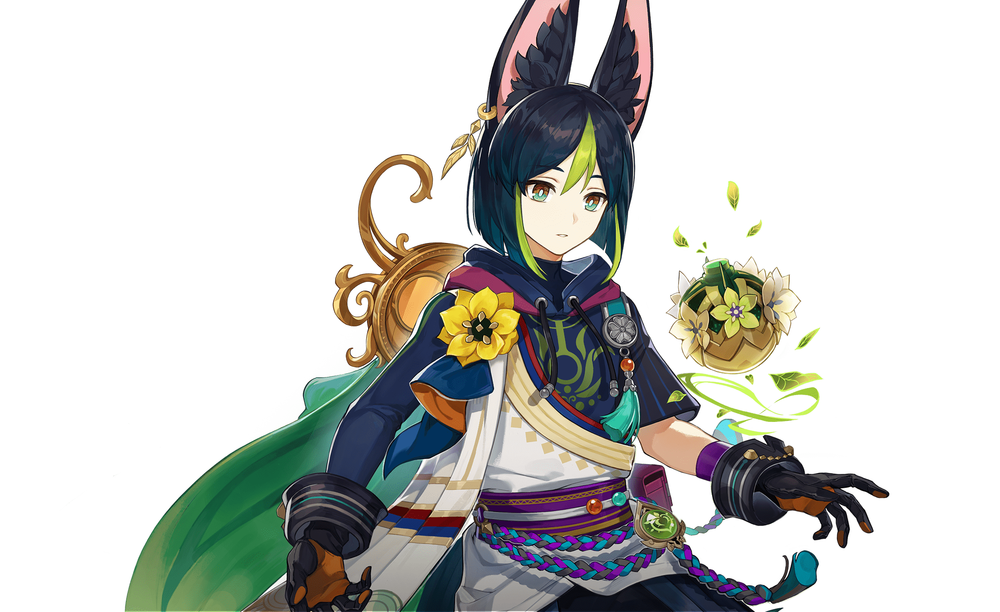

-

琴
CV: 齋藤千和 身為西風騎士團的代理團長，琴一直忠於職守，為人們帶來安寧。雖然並非天賦異稟，但經過刻苦訓練，如今的她已然能夠獨當一面。當風魔龍的威脅開始臨近，這位可靠的代理團長早已做好了準備，誓要守護蒙德。
身為西風騎士團的代理團長，琴一直忠於職守，為人們帶來安寧。雖然並非天賦異稟，但經過刻苦訓練，如今的她已然能夠獨當一面。當風魔龍的威脅開始臨近，這位可靠的代理團長早已做好了準備，誓要守護蒙德。
-

安柏
CV: 石見舞菜香
活潑率直的少女，是蒙德城中唯一的偵察騎士。擅長使用風之翼的安柏，連續三年蟬聯蒙德城的「飛行冠軍」。
作為西風騎士團的新星，今天的安柏依然活躍在第一線。 -

麗莎
CV: 田中理惠
她是鍾情於睡眠的知性魔女。
作為西風騎士團圖書館的管理員，聰明的麗莎總能以最有效的方式將遇到的問題統統解決。
雖然看似慵懶，但處變不驚的她似乎早已將一切盡數掌控。 -

凱亞
CV: 鳥海浩輔
在西風騎士團裡，凱亞是代理團長最信任的副手。凡是交託於他的任務，總能得到解決。
在蒙德城中，風趣幽默的他同樣深受人們的喜愛，然而這位談吐不凡的騎士隱約有著什麼不為人知的秘密。 -

芭芭拉
CV: 鬼頭明里
既是西風教會祈禮牧師，又是蒙德城的閃耀偶像。
對於習慣了傳統吟遊詩人的蒙德來說，「偶像」是還習慣不了的新鮮事物。但在蒙德，人人都愛芭芭拉。
這就是自由之都的自由精神——對大家投來的喜愛，芭芭拉是這樣滿懷感激地總結的。 -

迪盧克
CV: 小野賢章
身為蒙德城第一富豪，風度翩翩的迪盧克總是以完美的貴公子形象示人。
然而他真實的一面，是秉承堅定信念的戰士，他那「不惜一切守護蒙德」的意志如火焰般熾熱，令他能以恐怖的攻勢，毫不留情地將一切敵人無情擊潰。
-

雷澤
CV: 內山昂輝
在蒙德坊間的傳聞裡，有人說他是被狼收養的棄嬰，有人說他是狼靈的化身…
利爪與蒼雷在飛馳，狼永遠與荒野為伴。
時至今日，狼少年仍憑藉他野獸般的直覺，在林間與狼群一起奔獵。

-

琴
-

安柏
-

麗莎
-

凱亞
-

芭芭拉
-

迪盧克
-

雷澤
-

魈
CV: 松岡禎丞
守護璃月港的「三眼五顯仙人」之一，妙稱「護法夜叉大將」。
雖然外表看起來是一個少年人，但一些有關他的傳說，已在古卷中流傳千年。
對望舒客棧中一道名為「杏仁豆腐」的菜頗為喜愛。
究其原因，是因為「杏仁豆腐」的味道，與他曾經吞噬過的「美夢」十分相似。 -

北斗
CV: 小清水亞美
「南十字」船隊頭領，在璃月有著相當聲望。
有人說他能開山闢海，有人說他善舉劍引雷，還有人說，連恐怖的冥海巨獸都不是北斗的一合之敵。
外人也許會把這些話當作誇張的玩笑，但那些曾與北斗同航的人卻會說——「世上若真有什麼冥海巨獸，那北斗一定能將它劈作兩截。」 -

凝光
CV: 大原さやか
坐擁空中宮殿，有著大量傳言的璃月權貴，臉上總是掛著優雅神秘的笑容。
作為「璃月七星」中的天權星，她不僅象徵著權力與律法，也代表著財富與才智。
-

香菱
CV: 小澤亞李
「萬民堂」的新任大廚兼跑堂，對料理之道極具熱情，最拿手的是麻辣菜餚。
年紀尚輕，但廚藝精湛，在吃虎岩的老饕之中頗有名氣。
如果她要請你進行新品試吃，大可放心品嘗，絕不會辜負你的期待，真的。 -

行秋
CV: 皆川純子
璃月港飛雲商會的二少爺行秋自幼便以勤奮好學、待人禮貌聞名。
不過，即使是如此文雅的少年人，也有著動若脫兔的一面。
-
重雲
CV: 斉藤壮馬
以璃月為中心，四處進行驅邪活動的雲遊方士。作為驅邪世家繼承人，他自幼便有過人的絕技。然而，這種絕技並非學自師門，而是與生俱來的異能——「純陽之體」。
-
七七
CV: 田村ゆかり
藥廬「不卜廬」的採藥姑娘兼學徒。
因「仙緣」而擁有不死之身，行動時需要自己對自己下敕令。
七七的記憶力非常差，為了確保日常生活的順利，她隨身攜帶著一本筆記，寫有各種各樣的注意事項。
但在最不巧的那些日子裡，她連「要看筆記」這件事都會忘記……
-

魈
-

北斗
-

凝光
-

香菱
-

行秋
-

重雲
-

七七
-

神里綾華
CV: 早見沙織
稻妻「社奉行」神里家的大小姐。端莊文雅，聰慧堅韌。
待人接物真誠又得體，深受稻妻民眾愛戴，貴有「白鷺公主」之名。
-

楓原萬葉
CV: 島崎信長
稻妻出身的浪人武士。為人謙和，個性溫順。
年輕瀟灑的外表下埋藏著許多往事。看似隨性，心中卻有獨屬於自己的行事準則。
-

宵宮
CV: 植田佳奈
才華橫溢的煙花工匠，「長野原煙花店」的現任店主，被譽為「夏祭的女王」。
熱情似火的少女。未泯的童心與匠人的執著在她身上交織出了奇妙的焰色反應。
-

早柚
CV: 洲崎綾
早柚——隸屬於秘密組織「終末番」的特別忍者，對睡眠和長高有著異乎常人的追求。
掌握一切可用於逃跑、隱蔽的忍術，以此為自己創造偷懶睡覺的機會。
如此神奇的手段，或許會有意想不到的用途。 -

雷電將軍
CV: 沢城みゆき
雷電將軍——此世最殊勝威怖的雷霆化身，稻妻幕府的最高主宰。
挾威權之鳴雷，逐永恆之孤道的寂滅者。
-

九條裟羅
CV: 瀬戸麻沙美
天領奉行的將領。行如風、言如誓，是位魄力過人的女性。
她有著「神的篤信者」之名，將全部忠心都奉獻給了雷電將軍。
將軍所追求的「永恆」，也是她願意為之而戰的信念。 -

珊瑚宮心海
CV: 三森すずこ
心海是海祇島的「現人神巫女」，也就是現任海祇島最高領袖。
她通讀兵法、擅長謀略，在軍事上有著獨特見解，也能將內政、外交等工作處理得井井有條。
不過，這位人們眼中深不可測的領導者，似乎也有不為人知的一面…
-

魈
-

北斗
-

凝光
-

香菱
-

行秋
-

重雲
-

七七
-

提納里
CV: 小林沙苗
道成林的巡林官，畢業於阿彌利多學院的植物學學者。每天都過著巡查雨林、保護生態、教訓笨蛋的充實生活。
-

柯萊
CV: 前川涼子
見習巡林員，師從提納里。學術方面較同齡人起步稍晚，目前正在努力補習各種知識。
她將性格的另一面深深掩藏在陽光善良的表像之下。
-

多莉
CV: 金田朋子
多莉是活躍在須彌的百貨商人，最喜歡閃亮亮的摩拉。
能靠著精湛話術將手裡那些許多奇特又神秘的道具賣出高價。
-

賽諾
CV: 入野自由
教令院的大風紀官，所有風紀官們的首領。擁有的獨特幽默感令人印象深刻。
-

坎蒂絲
CV: 柚木涼香
阿如村的守護者，為人溫柔和善。在她的守護下，幾乎沒人能夠危害阿如村。
-

妮露
CV: 金元寿子
「祖拜爾劇場」的明星演員，舞姿娉婷，如睡蓮初綻，一塵不染。
但她絕非高傲清冷之人，即便只是匆匆的旅者，也會對她純潔質樸的笑容過目不忘。
-

納西妲
CV: 田村ゆかり
「小吉祥草王」深居於淨善宮內，向來不受重視，也很少被人提及。
她身負重任，哪怕目睹漆黑，經歷孤獨，也不曾停下腳步。
-

提納里
-

柯萊
-

多莉
-

賽諾
-

坎蒂絲
-

妮露
-

納西妲
-

林尼
CV: 下野紘
聞名楓丹的天才魔術師，以精妙的手法和言語牽動著觀眾的心。伶牙俐齒、演技精湛，心思如貓一樣難以猜透。
-

琳妮特
CV: 篠原侑
總是藏在陰影中的魔術助手，自稱「多功能魔術助理機關」。寡言少語，罕有表情，行動如貓一樣難以預料。
-

菲米尼
CV: 土岐隼一
不善言談的少年，精於潛水之道，內心就如他愛不釋手的童話故事那般純真。
-

那維萊特
CV: 神谷浩史
楓丹的最高審判官，看起來難以親近，或許是天性使然，或者是為了掩蓋秘密。
-

萊歐斯利
CV: 小野大輔
梅洛彼得堡的管理人，榮獲楓丹最高榮譽市民稱號「公爵」。處世低調，沉穩可靠。
-
夏洛蒂
CV: 和氣あず未
「祖拜爾劇場」的明星演員，舞充滿活力的《蒸汽鳥報》記者，每時每刻都在為「真相」而奔走。姿娉婷，如睡蓮初綻，一塵不染。
-

林尼
-

琳妮特
-

菲米尼
-

那維萊特
-

萊歐斯利
-
夏洛蒂
- 蒙德城
- 璃月港
- 稻妻城
- 須彌城
- 楓丹廷
- 敬請期待